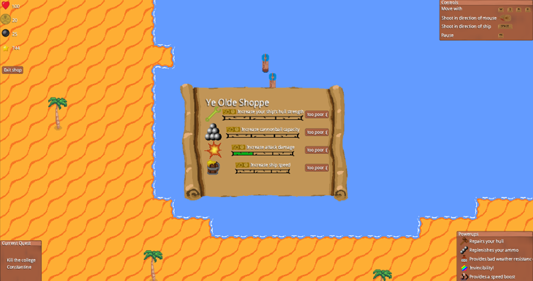
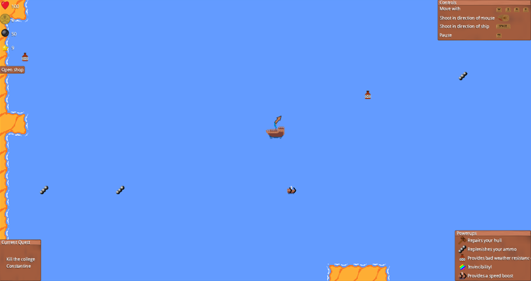
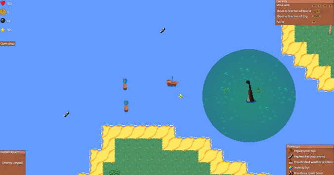
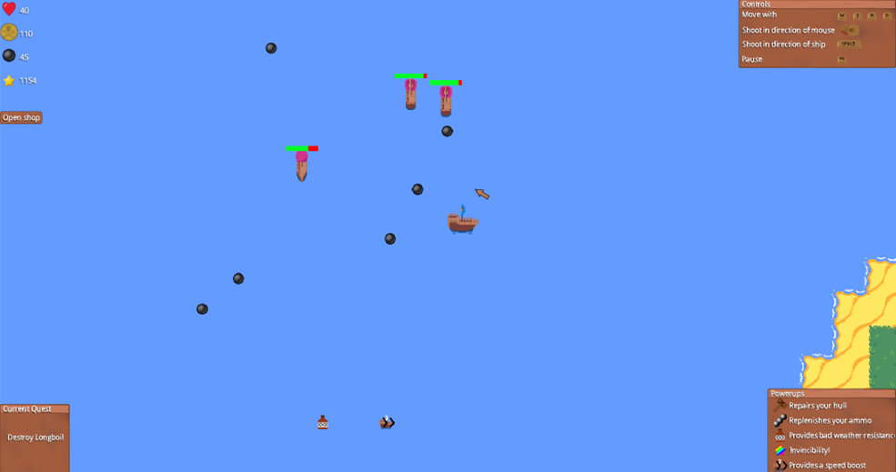

Game Info:
You control a ship sailing the Lake of York and are tasked with fulfilling certain quests along the way.
You use WASD keys to control the direction of the ship. The cannonball can be fired in the direction of the mouse with a left click, or in the direction of the ship with the spacebar.
Finding chests

You may need to follow directions in the prompt to sail around and find and collect a chest.
Destroying colleges

You may be tasked with destroying a given college. You will need to find the college by looking for its respective flag on an island and fire cannonballs to destroy every building on the island.
Upgrade your ship
Purchase upgrades for your ship to make your cannons, hull and firepower bigger and better, as well as a variety of other upgrades.
Collect powerups
Collect a variety of powerups scattered throughout the lake offering a burst of power in different ways. The different powerups you can get are:
- Super Speed
- Invinciblity
- Rapid Fire
- Bad Weather Resistance
- Ship Repair
Slaying sea monsters
You may need to fight and slay powerful sea monsters that can appear around the map. Be wary, sea monsters such as Longboi have poisonous areas around them to damage the player. Killing these beasts give plunder to be spent in the shop and can be the subject of quests.
Battle enemy ships
You can fight the ships belonging to enemy colleges. Fire cannonballs to deal damage and dodge incoming cannonballs for the enemy ships. Upon destroying the enemies you will receive plunder to be spent at the shop.
Complete Quests
Receive and complete quests for plunder and glory.